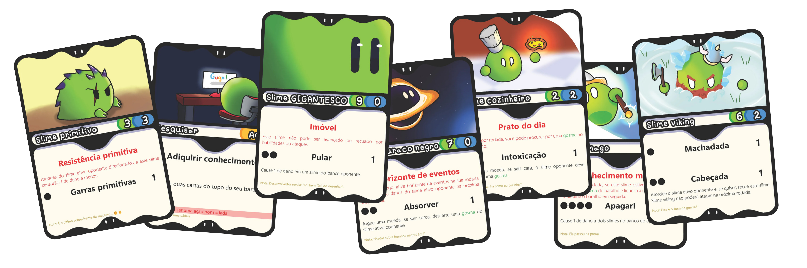

Pocket Slimes
Jogo de cartas de alunos do CTI Bauru!

Apresentação do projeto
Apresentação do projeto
Pocket Slimes é um jogo de cartas desenvolvido por alunos do 2º ano do Colégio Técnico Industrial (CTI) "Prof. Isaac Portal Roldán" de Bauru como parte de um projeto do curso de informática. O jogo tem todos os desenhos feitos à mão sem uso de IA e combina estratégia, criatividade e diversão em partidas protagonizadas por diferentes tipos de slimes, itens, ações e ferramentas.
Como comprar o jogo?
Como comprar o jogo?
O jogo será vendido presencialmente, principalmente durante a Semana do Colégio CTI.
Equipe e contato
Equipe e contato
O projeto é desenvolvido pelos alunos Renan Coelho, Luca Bressan, Frederico Eckhardt e Kauã César. Para conhecer a equipe, tirar dúvidas ou obter mais informações, entre em contato pelo e-mail pocket.slimes.cti@gmail.com.